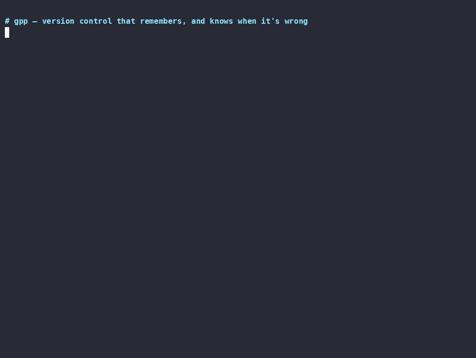

Agents change code continuously and keep notes that go stale silently. gpp captures every change as it happens, versions project knowledge inside the repo, and when a commit invalidates something you believed about the code, names that commit — deterministically, no LLM in the loop.
Works alongside git — the bridge round-trips real commits. Recording below is scripts/demo.sh: deterministic, no mockups.

Every serious agent setup carries a memory — a CLAUDE.md, a memory bank, a git-like memory store. They all keep knowledge beside the repository, so drift between memory and code has to be detected after the fact: re-read, re-embed, ask a model. gpp hosts knowledge on the repo's own event stream, so drift is witnessed — the change that staled a fact arrives as a commit with author, time, and diff attached.
## Auth notes - token expiry is 24h <- false since June. Nothing flags it. Served verbatim into the agent's context, every session.
$ gpp belief bisect "token expiry is 24h" INVALIDATED cs:fhcpef7c 2026-06-03 "raise token expiry to 7 days" - 7 | pub const EXPIRY_HOURS: u64 = 24; + 7 | pub const EXPIRY_HOURS: u64 = 168;
Five beliefs seeded at axum v0.6.0 with evidence spans in the real source, then bisected across 288 commits to v0.7.0 (imported through the git bridge). Every invalidated belief lands on a commit documented in axum's own changelog — and the control belief correctly survives.
| Belief (true at v0.6.0) | Verdict | Culprit commit |
|---|---|---|
Router is generic over the body type (Router<S, B>) |
invalidated | 4e4c2917 — Remove B type param (#1751) |
axum re-exports hyper::Server |
invalidated | c9796725 — Add serve, remove Server re-export (#1868) |
bodies stream via extract::BodyStream |
invalidated | 4e4c2917 — Remove B type param (#1751) |
shared state is extracted with State<T> |
holds | — (unchanged in 0.7; survives all 288 commits) |
Scope-only intersection marks a belief stale-candidate, never false; only evidence-span content change or deletion marks it invalidated. Evidence spans are drift-adjusted commit by commit. Full run + method: demos/belief-bisect. Import of 1,251 commits ≈ 8s; a full bisect rescan ≈ 0.5s.
Everything else — P2P sync, replay, review, RBAC, a TUI — is the platform underneath.
A high-frequency timeline records every file change automatically (SQLite WAL, debounced watcher). Curated changesets are promoted from it with explicit intent, author kind (human or agent), and a cost record. Nothing is lost between commits.
Graphex is an encrypted knowledge graph inside the repo: architecture, conventions, decisions, and beliefs with evidence spans. Tier-gated per agent trust level, audited on every read, and staleness-checked by the history it rides on.
First-class agent identity with reputation scoring,
compliance-as-code policies enforced at capture, promote, and sync,
anomaly detection, and per-changeset token/cost attribution
(gpp cost --report).
git tracks files superbly. gpp assumes the contributors and the questions have changed.
| the usual setup | gpp | |
|---|---|---|
| Recording | Manual commits when someone remembers; work between them is invisible | Continuous timeline capture; commits become curated promotions with intent |
| Project knowledge | External memory files beside the repo; staleness detected (maybe) after the fact | In-repo versioned knowledge; staleness witnessed by the same history, down to the commit |
| Diff review | Line diffs; a mechanical rename reads as hundreds of changed lines | Tree-sitter semantic ops; a rename or move collapses to one reviewable operation |
| Contributors | All committers equal; agent provenance squeezed into author strings | Agent identity, trust, policy, and cost as first-class, auditable data |
gpp git-import / git-export / git-bridge) round-trips real
git commits with an idempotent hash map, so GitHub, CI, and your
teammates' clones keep working untouched. The axum validation above ran
entirely on bridge-imported history.
Agents query the knowledge graph (stale beliefs arrive flagged ⚠/✗ in the projection), propose changesets, and report token costs. Local stdio only — no network listener, reads audited, content encrypted at rest.
Client setup for Claude Desktop and generic stdio clients: docs/MCP.md.
clippy/fmt clean, no stub crates —
but test depth is uneven. Foundational crates are well covered and the CLI
has end-to-end suites (policy enforcement, cost reporting, belief bisect);
several integration crates remain at smoke level. "Implemented" means
built and tested against its milestone, not exhaustively
hardened. The gap and its plan live in
TODO.md;
the running engineering log in
WORKLOG.md.
Each is a focused crate in one Cargo workspace; one static binary comes out.
Clone, build, and run the same deterministic script that produced the recording above.
$ git clone … && ./scripts/demo.sh copy